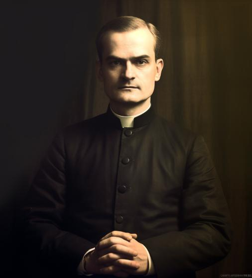
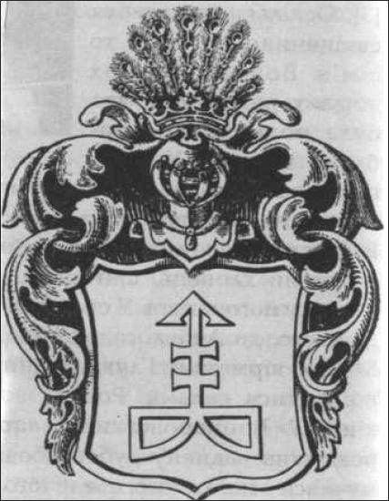
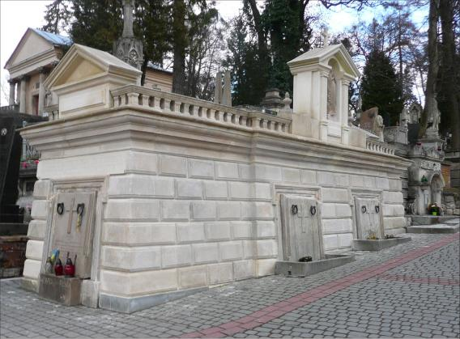

Наш патрон
Отець Тит Войнаровський - патрон Фонду
Отець Тит Войнаровський (1856-1938) - легендарний діяч українського руху першої половини 20 століття.
Видатний своїми системними масштабними проектами спрямованими на розбудову інституцій української політичної нації, підтримку української молоді та стимулювання підприємницької діяльності українців.
Діяльність Тита Войнаровського мала вирішальне значення на розвиток спроможностей низки українських організацій на Західній Україні в складі довоєнної Польщі, а згодом - збереження ідентичності українства в діаспорі.
-

БІОГРАФІЯ
Тит Войнаровський народився 16 лютого 1856 року в с. Ляцьке (нині Івано-Франківська область) у родині священика. Предки Войнаровського - українські шляхтичі з Наддніпрянщини, соратники Гетьмана Івана Мазепи.
Після здобуття духовної освіти Тит Войнаровський майже три десятиліття був душпастирем в галицьких селах, переважно на Покутті. Окрім виконання обов’язків священнослужителя допомагав селянам викуповувати землю - шукав для них кредити в європейських банках. У 1909-ому став засновником “Українського Земельного Банку”, яким керував 19 років, відмовившись від зарплати. За допомоги Войнаровського українські селяни викупили понад 20000 гектарів землі. Як наслідок - було створено 10000 господарств, на яких працювало 40000 селян.
Представляв українців у парламенті Австро-Угорщини (обраний депутатом у 1907 році).
-

У 1910 році на запрошення митрополита Андрея Шептицького переїжджає до Львова і стає управителем майна Української греко-католицької церкви. У адмініструванні Войнаровського перебували значні площі землі та підприємства. Займався нафтовидобутком у Карпатах, деревообробкою, розбудовою залізниці та іншими бізнесами.
Свої можливості “міністр фінансів” УГКЦ використовував, щоб допомогти українським селянам вирватися зі злиднів. Сприяв організації приватних підприємств довкола парових млинів, заснуванню цукроварень. Підтримував кондитерську фабрику “Фортуна нова” (нині “Світоч”) кредитами та реконструкцією. Був організатором спілки, що допомогла селянам експортувати худобу на вигідних умовах. Заснував страхове товариство “Карпатія”. Інвестував у проекти архітектора Івана Левинського, який звів значну кількість модернових будівель у Львові.
-

Гробниця крилошан УГКЦ на Личаківському цвинтарі у Львові
Впродовж всього життя підтримував громадські та молодіжні українські рухи. Придбав у Коломиї будинок, який перетворив на гуртожиток для студентів з бідних селянських родин. Був очільником освітнього товариства “Рідна Школа”. Підтримував молодіжний спортивний рух “Сокіл”. Був видатним Добродієм Пласту. Саме Войнаровський допоміг отримати землі під перші пластові оселі на г.Сокіл та біля с. Остодор. Для економічної просвіти селян заснував і очолив організацію “Сільський господар”. Підтримував “Просвіту”.
Займався також наукою. Мав титул почесного доктора наук в галузі економіки Української господарської академії в Подєбрадах (Чехо-Словаччина). Автор статей «Вплив Польщі на економічний розвиток України» (1911), «Про охорону селянської власності» (1911), «Що руйнує наше селянство і чи є яка рада тій руїні запобігти» та інших.
Отець Тит Войнаровський помер 21 лютого 1938 року. Похований у Львові на Личаківському кладовищі.
ЧОМУ ВІН?
Тит Войнаровський - яскрава і приваблива рольова модель для сучасної української бізнес-еліти.
Навіть через 100 років після найактивнішого періоду діяльності Войнаровського його світогляд, цінності, життєве кредо та підходи залишаються максимально актуальними.
Заснування Фонду його імені це спроба віддати належну шану цій масштабній історичній постаті. А з іншого боку - спосіб дати нинішнім українським бізнесменам-благодійникам яскравий приклад до наслідування.